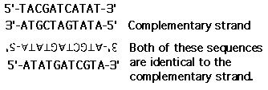

Nucleic Acids and the Genetic Material Problem Set 1
Problem 8: Complementary bases
For the DNA strand 5'-TACGATCATAT-3' the correct complementary DNA strand is:Complementary strands
The complementary strand for DNA must follow the base pairing and polarity rules. Pairing means that A=T and G=C. Polarity means that the strands have to run in opposite directions. First write the correct base pairing below the original sequence and label the 5' and 3' ends.
Next determine which answer gives the same sequence and polarity. Note that both of the solutions are the same.



 >
>
University of Arizona
Thursday, October 3, 1996
Contact the Development Team
http://www.biology.arizona.edu
All contents copyright © 1996. All rights reserved.